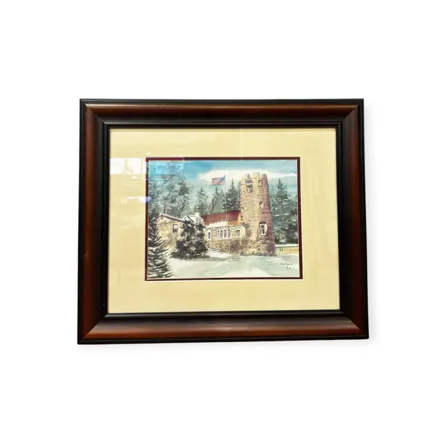
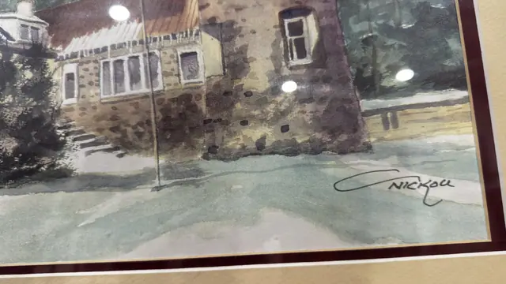
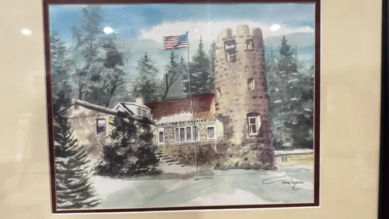

Paintings & Prints
Winter Watercolour of Stone Tower and Flag, Signed, Framed
· late 20th century
Price Upon Request



About the Item
A crenellated stone tower rises beside a low gabled lodge with a red roof, framed by dark evergreen spruces and a flagpole carrying the Stars and Stripes. The sky is laid in with loose blue and grey washes and the snow-covered foreground is left largely as bare paper with pale grey-green shadow strokes. Handling is fluid and transparent, with dry-brush texture picking out the masonry and branches. Medium: watercolour on paper. Signed lower right of the image, in black ink, reading "Nickou". Inscribed on the reverse or mount: Nickou. Condition: Reflections and light haze on the glazing; the image itself shows no foxing, staining or cockling that is visible through the glass.
Details
- Creation Year:
- late 20th century
- Dimensions:
- Height: 21.0 in (53.34 cm)
Width: 24.5 in (62.23 cm)
outside of frame - Medium:
- watercolour on paper
- Period:
- 20Th
- Condition:
- Offered in the condition shown in the photographs.
- Reference Number:
- VO-189
- Documentation:
- no certificate seen
- Gallery Location:
- Nickou